Git: Undoing
Week 3 - Part III
1 Branching & merging
1.1 A repo with a couple of commits
First, we create a dummy repo with a few commits by running a script:
cd /fs/ess/PAS2700/users/$USER/CSB/git/sandbox # Have a look at the script: less ../data/create_repository.sh # press `q` to exit less # Run the script, which will create our repo: ../data/create_repository.sh # Move to the repo dir: cd branching_exampleLet’s see what has been done in this repo:
git log --oneline # --oneline: 1-line summary per commitWe will later modify the file
code.txt— let’s see what it contains now:cat code.txt
1.2 Branches in Git
- We now want to improve the code, but these changes are experimental,
and we want to retain our previous version that we know works. - This is where branching comes in. With a new branch, we can make changes that don’t affect the
masterbranch, and we can also keep working on themasterbranch:
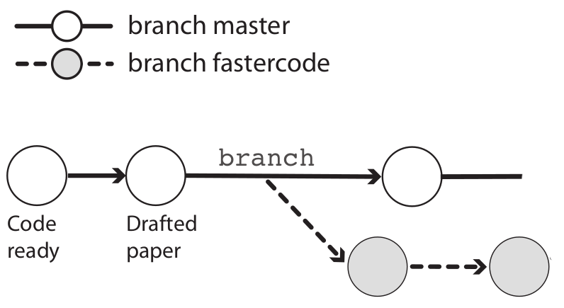
Creating a new branch
First, we create a new branch as follows:
git branch fastercode # We name the branch "fastercode"Let’s see what our log looks like now, and list the branches:
git log --onelinegit branch # Without args, git branch will list the branchesIt turns out we created a new branch but we are still on the master branch. We can switch branches with
git checkout:git checkout fastercode git branch # Should now show we are on `fastercode` git status # Should also tell us we are on `fastercode`
Making experimental changes on the new branch
We edit the code, stage and commit the changes:
echo "Yeah, faster code" >> code.txt cat code.txt git add code.txt git commit -m "Managed to make code faster"Let’s check the log again:
git log --oneline # Last commit: on branch "fastercode"
Moving back to the master branch
We need to switch gears and add references to the paper draft.
Since this has nothing to do with our attempt at faster code,
we should make these changes back on themasterbranch:git checkout master # move back to masterWhat does
code.txt, which we edited onfastercode, now look like?cat code.txt # Our working dir contents has changed!!Now, let’s add the reference, stage and commit:
echo "Marra et al. 2014" > references.txt git add references.txt git commit -m "Fixed the references"Now that we’ve made changes to each of the two branches, let’s see the log in “graph” format with
--graph, also listing all branches with--all:git log --oneline --graph --all
Finishing up on the experimental branch
Earlier, we finished speeding up the code at the
fastercodebranch, but we still need to document our changes. So, we go back:git checkout fastercodeDo we still have the
references.txtfile from themasterbranch?lsThen, we add the “documentation” to the code, stage and commit:
echo "# My documentation" >> code.txt git add code.txt git commit -m "Added comments to the code"Again we check the log graph:
git log --oneline --all --graph
Merging the branches
We are happy with the changes to the code, and want to make the
fastercodeversion the default version of the code. This means we should merge thefastercodebranch back intomaster. To do so, we first have to move back tomaster:git checkout masterNow we are ready to merge, and we use the
git mergecommand.
We also provide a commit message, because a merge is always accompanied by a commit:git merge fastercode -m "Much faster version of code"Once again, we check the log graph:
git log --oneline --all --graph
Cleaning up
We no longer need the
fastercodebranch, so we can delete it:git branch -d fastercodeAnd again we check the log graph:
git log --oneline --all --graph
1.3 Branching and merging – Workflow summary
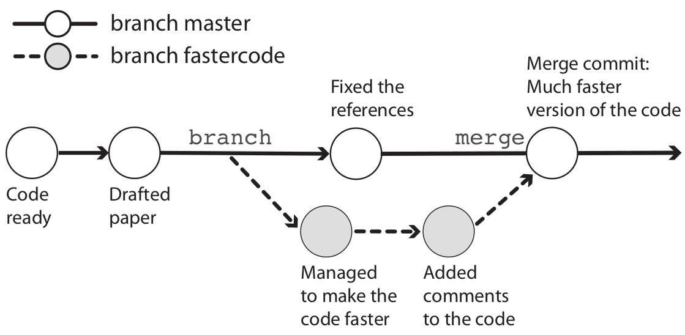
Visualization with http://git-school.github.io/visualizing-git.
Overview of commands used in the branching workflow
# Create a new branch:
git branch mybranch
# Move to new branch:
git checkout mybranch
# Add and commit changes:
git add --all
git commit -m "my message"
# Done with branch - move back to main trunk and merge
git checkout master
git merge mybranch -m "Message for merge"
# And [optionally] delete the branch:
git -d mybranchExercise (Intermezzo 2.2)
- (a) Move to the directory
CSB/git/sandbox.
Solution
cd /fs/ess/PAS2700/users/$USER/CSB/git/sandbox- (b) Create a directory
thesisand turn it into a Git repository.
Solution
mkdir thesis
cd thesis
git init- (c) Create the file
introduction.txtwith the line “Best introduction ever.”
Solution
echo "The best introduction ever" > introduction.txt- (d) Stage
introduction.txtand commit with the message “Started introduction.”
Solution
git add introduction.txt
git commit -m "Started introduction"- (e) Create the branch
newintroand change into it.
Solution
git branch newintro
git checkout newintro- (f) Overwrite the contents of
introduction.txt, create a new filemethods.txt, stage, and commit.
Solution
echo "A much better introduction" > introduction.txt
touch methods.txt
git add --all
git commit -m "A new introduction and methods file"- (g) Move back to
master. What does your working directory look like now?
Solution
git checkout master
ls # Changes made on the other branch are not visible here!
cat introduction.txt- (h) Merge in the
newintrobranch, and confirm that the changes you made there are now in your working dir.
Solution
git merge newintro -m "New introduction"
ls
cat introduction.txt- (i) Bonus: Delete the branch
newintro.
Solution
git branch -d newintro2 Merge conflicts
A merge conflict can occur when all three of the following conditions are met:
- You try to merge two branches (including when pulling from remote: recall that a pull includes a merge)
- One or more files have been changed (via commits) on both of these branches since their divergence.
- Some of these changes were made in the same part(s) of file(s).
When this occurs, Git has no way of knowing which changes to keep,
and it will report a merge conflict as follows:
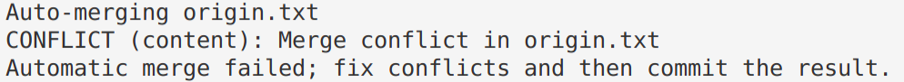
Resolving a merge conflict
When you get a merge conflict, follow these steps:
- Use
git statusto find the conflicting file(s).
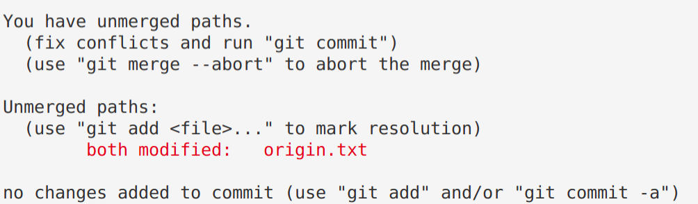
- Open and edit those files manually to a version that fixes the conflict.
Git has changed this file to add the conflicting lines from both versions of the file, and to add marks indicating these conflicting lines:
On the Origin of Species # Line preceding conflicting line
<<<<<<< HEAD # GIT MARK 1: Next line = current branch
Second line of the book - from main # Conflict line: current branch
======= # GIT MARK 2: Dividing line
Second line of the book - from conflict-branch # Conflict line: incoming branch
>>>>>>> conflict-branch # GIT MARK 3: Prev line = incoming branchYou have to manually change the contents in your text editor to keep the conflicting content that you want, and to remove the indicator marks that Git made.
VS Code has some nice functionality to make this easier:
code <conflicting-file> # Open the file in VS Code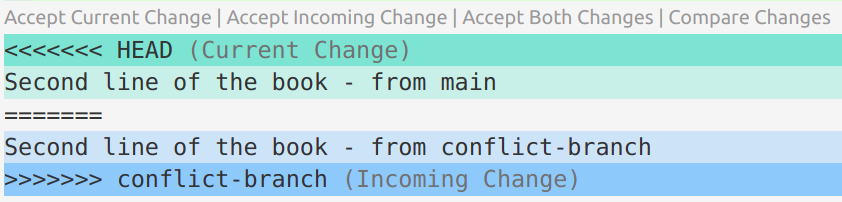
If you click on “Accept Current Change” or “Accept Incoming Change”, etc., it will keep the desired lines and remove the Git indicator marks. Then, save and exit.
Use
git addto tell Git you’ve resolved the conflict in a particular file.git add origin.txt

Once all conflicts are resolved, use
git statusto check that all changes are staged. Then, usegit committo finish the merge commit.Even if you provided a commit message for the merge at the outset, Git will now launch your text editor if you don’t again do so.
git commit
3 Forking and creating a Pull Request
Forking a GitHub repository
You can follow along by e.g. forking my originspecies repo.
- Go to a GitHub repository, and click the “Fork” button in the top-right:
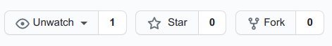
You’ll be asked which account or organization to fork to (you should pick your personal account, which is likely the only one you have).
Now, you have your own version of the repository,
and it is labeled explicitly as a fork:
Forking workflow
You can’t directly modify the original repository, but you can:
- First, modify your fork (with local edits and pushing).
- Then, submit a so-called Pull Request to the owner of the original repo to pull in your changes.
- Also, you can also easily keep your fork up-to-date with changes to the original repository.

Editing the forked repository
Clone your forked GitHub repository to your computer. Find the URL for the GitHub repository by clicking the green
Codebutton.Make sure you get the SSH URL, and then click the clipboard button next to the URL to copy it.
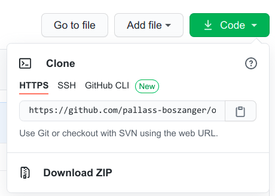
git clone git@github.com:jelmerp/originspecies.gitNow, we can make changes to the repository in the familiar way:
echo "# Chapter 1. Variation under domestication" > origin.txt git add origin.txt git commit -m "Suggested title for first chapter." git push origin
Creating a Pull Request
- If we then go back to GitHub, we see that our forked repo is “x commit(s) ahead” of the original repo:
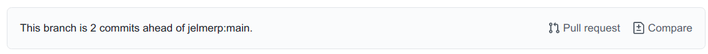
- Click
Pull Request, and check whether the right repositories and branches are being compared: You can also see the changes that were made in this window.
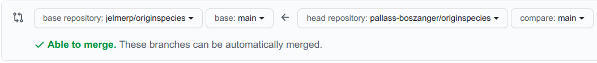
- If it looks good, click the green
Create Pull Requestbutton:
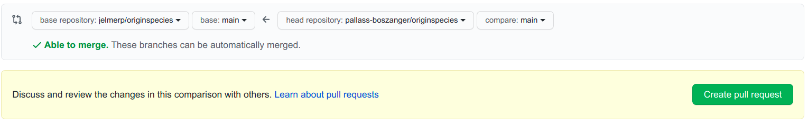
- Give your pull request a title, and write a brief description of your changes:
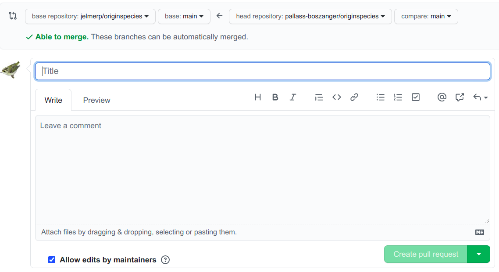
Keeping your fork up-to-date
As we saw, you can’t directly push to original repo but instead have to submit a Pull Request (yes, this terminology is confusing!).
But, you can create an ongoing connection to the original repo, which you can use to periodically pull to keep your fork up-to-date.
This works similarly to connecting your own GitHub repo:
git remote add upstream git@github.com:jelmerp/originspecies.git
# List the remotes:
git remote -v
origin git@github.com:pallass-boszanger/originspecies.git (fetch)
origin git@github.com:pallass-boszanger/originspecies.git (push)
upstream git@github.com:jelmerp/originspecies.git (fetch)
upstream git@github.com:jelmerp/originspecies.git (push)
# Pull from the upstream repository:
git pull upstream main“upstream” is an arbitrary name often used by convention,
as opposed to “origin” for your own version of the online repo.
4 Miscellaneous
4.1 Amending commits
Let’s say we forgot to add a file to a commit, or we notice a silly typo in something we just committed.
Creating a separate commit for this seems “wasteful” or even confusing,
and including these changes along with others in a next commit is also likely to be inappropriate. In such cases, we can amend the commit.
First, we stage the forgotten or fixed file:
git add <file>Then, we amend the commit (also using the
--no-editflag because we do not want change the commit message):git commit --amend --no-edit
Because amending commits “changes history”, some recommend avoiding this altogether. For sure, do not amend commits that have been published in (pushed to) the online counterpart of the repo.
4.2 git stash
Git stash can be useful when you need to pull from remote, but have changes in your working dir that:
- Are not appropriate for a separate commit
- Are not worth starting a new branch for, because you want to get these changes back on the current branch immediately.
# Stash changes to tracked files:
git stash # Note: add option -u to include untracked files
# Pull from the remote repository:
git pull
# Apply stashed changes:
git stash apply4.3 More Git tidbits
Git will not pay attention to empty directories.
You can create a new branch and move to it in one go using:
git checkout -b <new-branch-name>To show commits in which a specific file was changed, you can simply use:
git log <filename>“Aliases” (command shortcuts) can be useful with Git, and can be added to the
~/.gitconfigfile or set withgit config:[alias] hist = log --graph --pretty=format:'%h %ad | %s%d [%an]' --date=short last = log -1 HEAD # Just show the last commitgit config --global alias.last "log -1 HEAD"
4.4 Add a collaborator in GitHub
- You can add a collaborator to a repository by going to the repository’s settings:
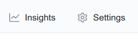


5 Undoing I: changes that have not been committed
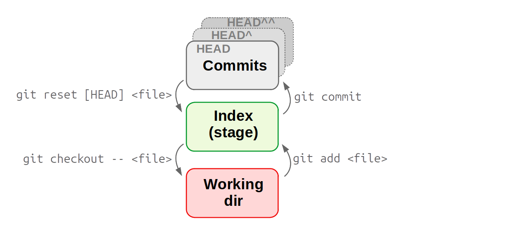
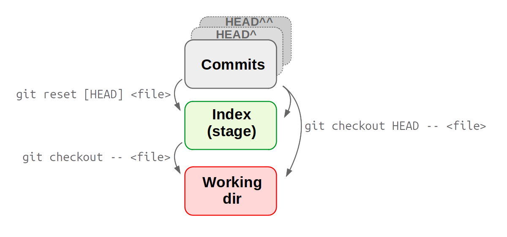
5.1 Recovering a version from the repo
This applies to changes that have not been staged.
Let’s say we accidentally overwrite instead of append to a file:
echo "todo: ask sequencing center about adapters" > README.mdAlways start by checking the status:
git statusWe want to “discard changes in working directory” by recovering the version of the file in the index (and HEAD), and Git told us how to do this:
git checkout -- README.md
For git checkout, the CSB book example omits the dashes --. These indicate that the checkout command should operate on a file, but since the filename is provided too, this is not strictly necessary.
If you accidentally deleted a file, you can similarly retrieve it with git checkout:
git checkout -- deleted-file.txtFor recent Git versions (not yet on OSC), Git will instead of git checkout recommend the following when you do git status:
git restore README.md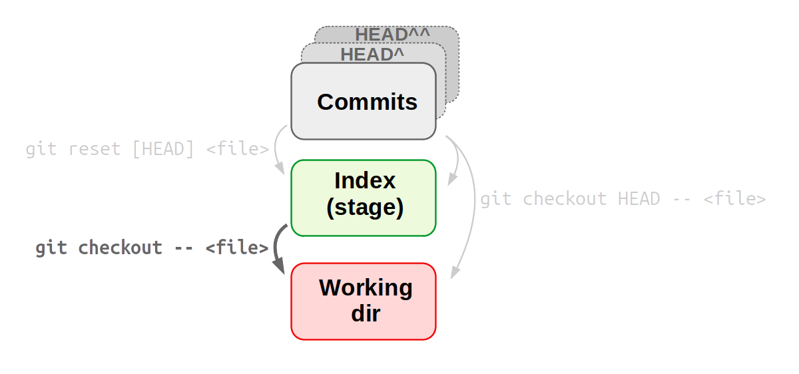
5.2 Unstaging a file
git resetcan unstage a file, which is most often needed when you added a file that was not supposed to be part of the next commit:echo "The following TruSeq adapters were used:" >> README.md echo "wc -l *fastq" > count_reads.sh git add --allOops, those two file changes should be part of separate commits.
Again, we check the status first – and learn we should usegit reset:git reset HEAD README.md
git reset will only unstage and not revert the file back to its state at the last commit (cf. CSB — mistake in the book!).
(git reset --hard does revert things back to the state of a desired commit, but only works on commits and not individual files.)
If you staged a file and realize you made a mistake, or staged prematurely, you can continue editing the file and re-add it.
For recent Git versions (not yet on OSC), Git will instead of
git resetrecommend the following when you dogit status:git restore --staged README.md
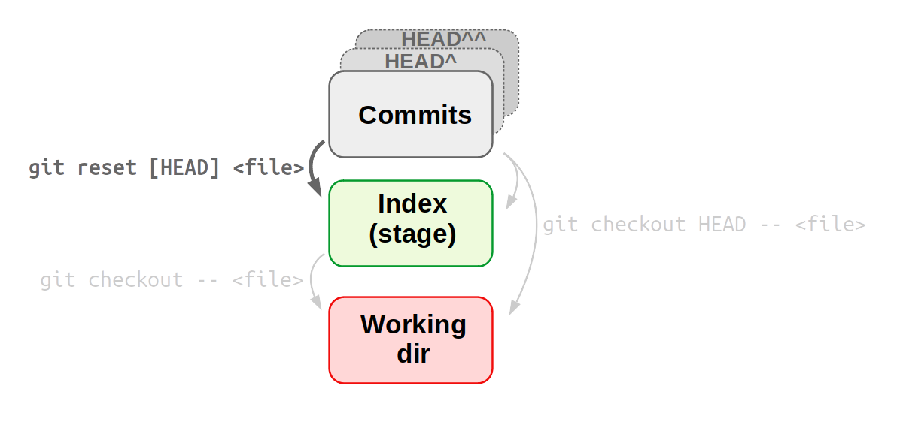
5.3 Undoing staged changes
What if we had staged our mistaken changes, and we need to recover the file from the last commit?
For instance, we overwrote the README.md and staged the misshapen file:
echo "Todo: ask sequencing center about adapters" > README.md
git add README.mdTo recover the version stored in the last commit, and disregard any staged and unstaged changes to the file:
git checkout HEAD -- README.mdBe careful with the git checkout command,
because it irrevocably discards the non-committed changes.
More broadly: your data is only safe with Git once it has been committed.
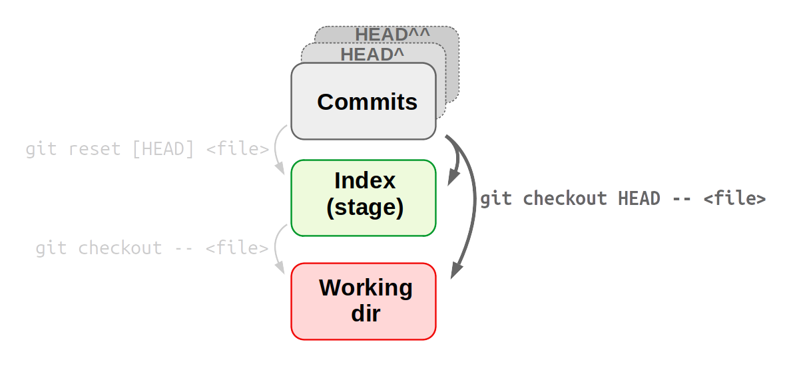
5.4 Summary
For a particular file README.md, I want to:
Unstage the file, but don’t discard (replace) its changes:
git reset HEAD -- README.mdGo back to the last commit and discard unstaged changes:
git checkout -- README.md # Technically: grabs file from *Index*Go back to the last commit and discard staged changes
(and any unstaged changes if those are also present):git checkout HEAD -- README.mdBonus: undo any and all staged and unstaged changes (unsafe!):
git reset --hard HEAD
6 Undoing II: changes that have been committed
6.1 Viewing past versions of the repository
Say, we want to see what our project looked like at some point in the past.
First, we print an overview of past commits and their messages:
git log --oneline --all --graphWe find a commit we want to go back to, and look around in the past:
git checkout <sha-id> # Replace <sha-id> by an actual hash less myfile.txt # Etc. ...To go back to where we were originally:
git checkout master
If you want to move your repo back to this earlier state,
there are several strategies — see the next section.
For a single file, a quick way can be: copy it out of your repo, move back to the “present”, and put it back in your repo in the present.
Note the confusing re-use of git checkout!
We have now seen git checkout being used to: - Move between branches - Revert files back to previous states - Move to previous commits to explore (figure below)

6.2 Undoing entire commits
To undo commits, i.e. move the state of your repository back to how it was before the commit you want to undo, there are two main commands:
git revert: Undo the changes made by commits by reverting them in a new commit.git reset: Delete commits as if they were never made.
Undoing with git revert is much safer than with git reset, because git revert does not erase any history.
For this reason, some argue you should not use git reset on commits altogether. At any rate, you should never use git reset for commits that have already been pushed online.
6.3 Undoing commits with git revert
Create a new commit that will revert all changes made in the
specified commit:git revert HEAD # Undo changes by most recent commit git revert HEAD^ # Undo changes by second-to-last commit git revert e1c5739 # Undo changes by any arbitrary commit
6.4 Undoing commits with git reset
git reset is quite complicated as it has three modes (--hard, --mixed (default), and --soft) and can act either on individual files and on entire commits.
We’ve already used git reset on individual files (to unstage).
To undo a commit, and:
Stage all changes made by that commit:
git reset --soft HEAD^ #Undo LAST=reset to 2nd-to-lastPut all changes made by that commit in the working dir:
git reset [--mixed] HEAD^ # --mixed is defaultCompletely discard all changes made by that commit:
git reset --hard HEAD^
6.5 Viewing & reverting to earlier versions of files
Get a specific version of a file from a past commit:
git checkout HEAD^^ -- README.md # From second-to-last commit git checkout e1c5739 -- README.md # From arbitrary commitYour now have the old version in the working dir & staged:
cat README.md git statusYou can go on to commit this version from the past, or go back current version as we will do below:
git checkout HEAD -- README.md less README.md # Back to the current version git status # Up-to-date
Be careful with git checkout as any uncommitted changes to the same file would be overwritten by the past version you are getting!
An alternative method to view and revert to older versions of specific files is to use git show.
We can view a file from any commit as follows:
git show HEAD:README.md # Version in the last commit git show ad4ca74:README.md # An arbitrary versionThanks to our shell skills, it’s also easy to revert a file to a previous version in this way:
git show ad4ca74:README.md > README.md